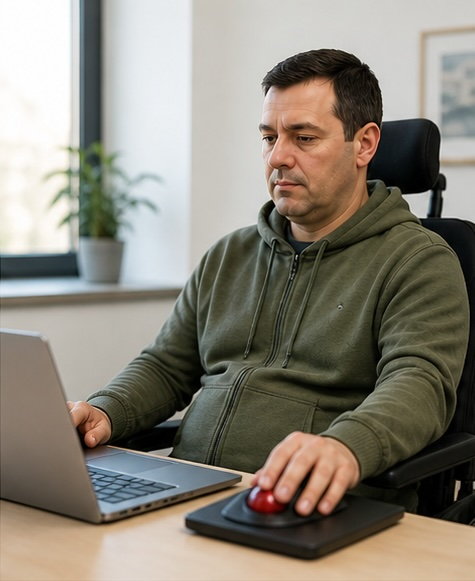

Miguel Mota
“Quan la precisió es converteix en una barrera”

03 · Discapacitat motriu
Perfil
Estudiant universitari de 38 anys amb lesió medul·lar i mobilitat reduïda a les mans.
Com utilitza la tecnologia
- Navegació amb teclat.
- Focus visible per orientar-se.
- Zoom puntual per interactuar amb elements petits.
Què li passa
Ha de clicar en un menú desplegable, però només apareix quan passa el ratolí per sobre.
Ha de repetir el moviment diverses vegades.
La tasca es torna lenta i frustrant.
Barreres
- Elements petits o difícils de clicar.
- Menús que depenen del hover.
- Accions que requereixen molta precisió.
- Finestres emergents inesperades.
Necessita
- Enllaços i botons grans i clars.
- Navegació sense necessitat de precisió extrema.
- Menús visibles sense passar el ratolí per sobre.
- Interaccions simples i previsibles.
Idea clau
Cada persona interactua de manera diferent amb la tecnologia.
El disseny ha de tenir-ho en compte.